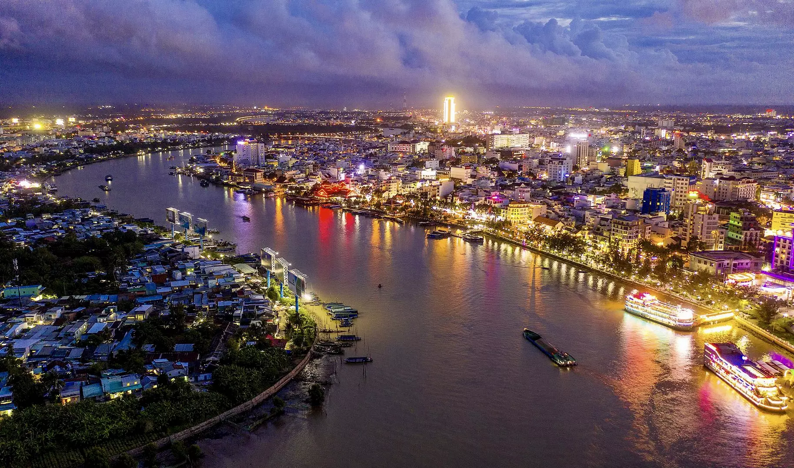
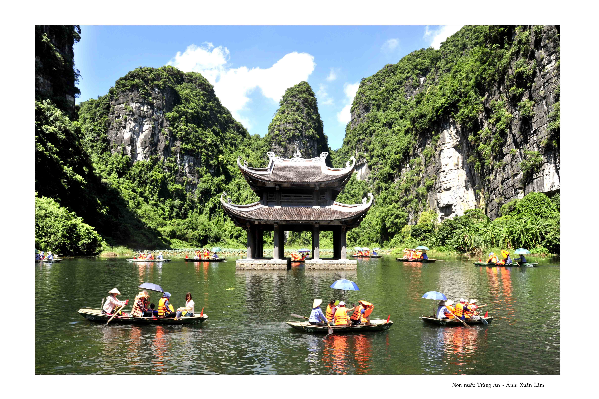

SaPa
Trải nghiệm không gian văn hóa đặc sắc và chinh phục nóc nhà Đông dương Fasipar trong làn sương mờ ảo.
Xem chi tiết →
Hội An
Phố cổ lung linh trong ánh đèn òng, nơi thời gian như ngừng lại giữa những nếp nhà vàng cổ kính và dòng sông Hoài thơ mộng
Xem chi tiết →
Phú Quốc
Thiên đường rực nắng với những bãi cát trắng mịn, nước biểm trong xanh như ngọc và hệ sinh thái biển đa dạng.
Xem chi tiết →
Vịnh Hạ Long
Kỳ quan thiên nhiên thế giưới với hàng nghìn hòn đảo đá vôi kỳ vĩ và những hang động huyền bí giữa lòng vịnh.
Xem chi tiết →
Cố đô Huế
Khám phá vẻ đẹp cung đình trầm mặc, các lăng tẩm uy nghi và thưởng thức ẩm thực tinh tế của vùng đất kinh kỳ xưa.
Xem chi tiết →
Mũi Né
Chiêm ngưỡng những đồi cát bay kỳ ảo, làng chài tấp nập và những bãi biển lọng gió lý tưởng cho các môn thể thao nước
Xem chi tiết →
Đà Lạt
Thành phố ngàn hoa với khí hậu ôn hòa quanh năm, những đối thông reo và những quán cà phê đậm chất nghệ sĩ
Xem chi tiết →
Cần thơ
Trải nghiệm nét văn hóa sông nước miền Tây độc đáo tại chợ nổi Cái Răng và thưởng thức trái cây miệt vườn trĩu quả.
Xem chi tiết →
Tràng An
Di sản thế giới kép với hệ thống núi đá vôi vương mình trên dòng sông xanh ngắt, tạo nên bước tranh sơn thủy hữu tình
Xem chi tiết →